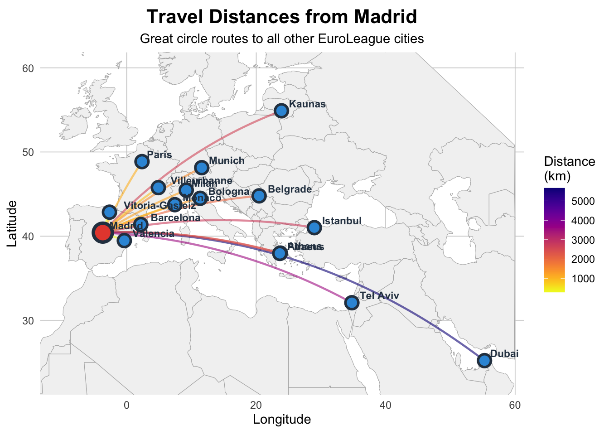

Code
# Load required libraries
library(tidyverse)
library(geosphere)
library(ggplot2)
library(maps)
library(viridis)
library(leaflet)
library(htmltools)
library(htmlwidgets)
library(crosstalk)
library(DT)
library(shiny)Brandon LeBeau
October 7, 2025
I’ve always wanted to do TidyTuesday, but never made time to spend on it. I liked to recommend the data to students as a way to explore data or practice creating effective visualizations. Today, I decided to dive in to create something. This week, the data was on EuroLeague Basketball.
The data had information on the 20 teams, the city and country they are based out of, the size of their stadium, and the number of times they have won the EuroLeague Basketball title. I initially thought about exploring something related to the size of the stadium and the number of times they won the League title, but I was struck by how varied the locations were. This led me to want to visualize how far apart the different teams were.
I’m sure there is a way to do this in R or Python, but I ultimately asked Claude to help me identify the latitude and longitude for each team’s home city (note, some have the same city, so will have the same location). This way I could focus on creating and honing the visualization. I was struck a few years ago by the plane arc visualization that was extremely popular. I had never created a figure like this before, so I set off to create something like this.
Here are the packages used for the following visualizations / interactive features. I first create a static image as a proof of concept, then I converted the static image to appropriate leaflet code (duplicating some processes along the way) to create interactive versions. At the very end, I use DT to create a summary table for each team and their average (and minimum and maximum) distance they need to travel.
First, I used Madrid as the reference city to visualize how far each city is from Madrid. I picked Madrid as it was on one extreme, the most western city in the group. Madrid has many cities that are closer, but some that would be a long flight.
# Create the dataset with team locations
teams <- tibble(
Team = c("Anadolu Efes", "Barcelona", "Baskonia", "Bayern Munich",
"Crvena zvezda", "Dubai Basketball", "Fenerbahce", "Hapoel Tel Aviv",
"LDLC ASVEL", "Maccabi Tel Aviv", "Monaco", "Olimpia Milano",
"Olympiacos", "Panathinaikos", "Paris Basketball", "Partizan",
"Real Madrid", "Valencia Basket", "Virtus Bologna", "Zalgiris"),
City = c("Istanbul", "Barcelona", "Vitoria-Gasteiz", "Munich",
"Belgrade", "Dubai", "Istanbul", "Tel Aviv",
"Villeurbanne", "Tel Aviv", "Monaco", "Milan",
"Piraeus", "Athens", "Paris", "Belgrade",
"Madrid", "Valencia", "Bologna", "Kaunas"),
Country = c("Turkey", "Spain", "Spain", "Germany",
"Serbia", "UAE", "Turkey", "Israel",
"France", "Israel", "Monaco", "Italy",
"Greece", "Greece", "France", "Serbia",
"Spain", "Spain", "Italy", "Lithuania"),
Latitude = c(41.0082, 41.3851, 42.8467, 48.1351,
44.7866, 25.2048, 41.0082, 32.0853,
45.7660, 32.0853, 43.7384, 45.4642,
37.9478, 37.9838, 48.8566, 44.7866,
40.4168, 39.4699, 44.4949, 54.8985),
Longitude = c(28.9784, 2.1734, -2.6716, 11.5820,
20.4489, 55.2708, 28.9784, 34.7818,
4.8795, 34.7818, 7.4246, 9.1900,
23.6473, 23.7275, 2.3522, 20.4489,
-3.7038, -0.3763, 11.3426, 23.9036)
)
# Remove duplicate cities for cleaner visualization
teams_unique <- teams |>
group_by(City) |>
slice(1) |>
ungroup()
# Function to calculate distance
calc_distance <- function(lat1, lon1, lat2, lon2) {
# Haversine formula for great circle distance
R <- 6371 # Earth's radius in km
lat1_rad <- lat1 * pi / 180
lat2_rad <- lat2 * pi / 180
delta_lat <- (lat2 - lat1) * pi / 180
delta_lon <- (lon2 - lon1) * pi / 180
a <- sin(delta_lat/2)^2 + cos(lat1_rad) * cos(lat2_rad) * sin(delta_lon/2)^2
c <- 2 * atan2(sqrt(a), sqrt(1-a))
R * c
}
# Create distance matrix
distance_data <- expand.grid(
from_city = teams_unique$City,
to_city = teams_unique$City,
stringsAsFactors = FALSE
) |>
filter(from_city != to_city) |>
left_join(teams_unique |> select(City, from_lat = Latitude, from_lon = Longitude),
by = c("from_city" = "City")) |>
left_join(teams_unique |> select(City, to_lat = Latitude, to_lon = Longitude),
by = c("to_city" = "City")) |>
mutate(distance = calc_distance(from_lat, from_lon, to_lat, to_lon)) |>
arrange(from_city, distance)# Function to create curved paths between points
create_arc <- function(lon1, lat1, lon2, lat2, n = 50) {
# Calculate great circle path
gc <- gcIntermediate(c(lon1, lat1), c(lon2, lat2), n = n, addStartEnd = TRUE)
if (is.matrix(gc)) {
return(data.frame(lon = gc[, 1], lat = gc[, 2]))
} else {
return(data.frame(lon = c(lon1, lon2), lat = c(lat1, lat2)))
}
}
# Create connections between all pairs of cities
connections <- list()
idx <- 1
n_cities <- nrow(teams_unique)
for (i in 1:(n_cities - 1)) {
for (j in (i + 1):n_cities) {
arc_data <- create_arc(
teams_unique$Longitude[i], teams_unique$Latitude[i],
teams_unique$Longitude[j], teams_unique$Latitude[j]
)
arc_data$group <- idx
arc_data$from <- teams_unique$City[i]
arc_data$to <- teams_unique$City[j]
# Calculate distance
distance <- distHaversine(
c(teams_unique$Longitude[i], teams_unique$Latitude[i]),
c(teams_unique$Longitude[j], teams_unique$Latitude[j])
) / 1000
arc_data$distance <- distance
connections[[idx]] <- arc_data
idx <- idx + 1
}
}
# Combine all connections
all_connections <- bind_rows(connections)
# Get world map data
world_map <- map_data("world")
# Filter to relevant region
europe_map <- world_map |>
filter(long >= -15 & long <= 60 & lat >= 20 & lat <= 65)
# Alternative version: Show only connections from one city (e.g., Madrid)
reference_city <- "Madrid"
connections_from_madrid <- all_connections |>
filter(from == reference_city | to == reference_city)
ggplot() +
geom_polygon(data = europe_map,
aes(x = long, y = lat, group = group),
fill = "gray95", color = "gray70", linewidth = 0.2) +
geom_path(data = connections_from_madrid,
aes(x = lon, y = lat, group = group, color = distance),
alpha = 0.6, linewidth = 0.8) +
geom_point(data = teams_unique,
aes(x = Longitude, y = Latitude),
size = 4, color = "#2C3E50", shape = 21,
fill = "#3498DB", stroke = 1.5) +
geom_point(data = teams_unique |> filter(City == reference_city),
aes(x = Longitude, y = Latitude),
size = 6, color = "#2C3E50", shape = 21,
fill = "#E74C3C", stroke = 2) +
geom_text(data = teams_unique,
aes(x = Longitude, y = Latitude, label = City),
size = 3, hjust = -0.2, vjust = -0.5,
fontface = "bold", color = "#2C3E50") +
scale_color_viridis(option = "plasma", name = "Distance\n(km)",
direction = -1) +
coord_fixed(ratio = 1.3, xlim = c(-10, 58), ylim = c(23, 60)) +
labs(title = sprintf("Travel Distances from %s", reference_city),
subtitle = "Great circle routes to all other EuroLeague cities",
x = "Longitude", y = "Latitude") +
theme_minimal() +
theme(
plot.title = element_text(face = "bold", size = 16, hjust = 0.5),
plot.subtitle = element_text(size = 11, hjust = 0.5),
panel.grid.major = element_line(color = "gray80", linewidth = 0.3),
panel.grid.minor = element_blank(),
legend.position = "right",
plot.background = element_rect(fill = "white", color = NA),
panel.background = element_rect(fill = "white", color = NA)
)
Now, I made the figure interactive using Leaflet. I tried using JavaScript to create a drop-down origin city selector (with the help of Claude again), but the leaflet map seemed to not re-render when switched. When I switched cities, the leaflet map would just turn to a grey tile.
Instead, I’ve generated a single interactive version that shows the distances between Paris and all the cities. You can hover over features to see the distance traveled.
pal <- colorNumeric(
palette = viridisLite::plasma(256),
domain = distance_data$distance
)
create_city_map <- function(city_name) {
# Get city coordinates
city_coords <- teams_unique |> filter(City == city_name)
# Get connections from this city
city_connections <- distance_data |>
filter(from_city == city_name)
# Create map
map <- leaflet() |>
addProviderTiles(providers$CartoDB.Positron) |>
setView(lng = city_coords$Longitude,
lat = city_coords$Latitude,
zoom = 4)
# Add curved connections using create_arc
for (i in 1:nrow(city_connections)) {
# Create great circle arc
arc <- create_arc(
city_connections$from_lon[i],
city_connections$from_lat[i],
city_connections$to_lon[i],
city_connections$to_lat[i]
)
label_text <- sprintf("%s → %s: %.0f km",
city_connections$from_city[i],
city_connections$to_city[i],
city_connections$distance[i])
map <- map |>
addPolylines(
lng = arc$lon,
lat = arc$lat,
color = pal(city_connections$distance[i]),
weight = 2,
opacity = 0.6,
label = label_text,
labelOptions = labelOptions(
style = list("font-weight" = "normal", "padding" = "3px 8px"),
textsize = "12px",
direction = "auto"
),
highlightOptions = highlightOptions(
weight = 4,
opacity = 1,
bringToFront = TRUE
)
)
}
# Add markers
map <- map |>
addCircleMarkers(
data = teams_unique,
lng = ~Longitude,
lat = ~Latitude,
radius = 6,
color = "#2C3E50",
fillColor = ~ifelse(City == city_name, "#E74C3C", "#3498DB"),
fillOpacity = 0.8,
weight = 2,
label = ~paste0(City, ", ", Country),
labelOptions = labelOptions(
style = list("font-weight" = "normal", "padding" = "3px 8px"),
textsize = "12px",
direction = "auto"
)
) |>
addLegend(
position = "bottomright",
pal = pal,
values = city_connections$distance,
title = "Distance (km)",
opacity = 0.7
)
return(map)
}I finally present some descriptive statistics on the average, median, minimum, and maximum distances that teams have to travel. Some of them are very close, but others have significant amounts of travel to contend with. Travel to play games is not only costly, but could make recovery more difficult for the players.
# Average distance by city
avg_by_city <- distance_data |>
group_by(from_city) |>
summarise(
`Average Distance (km)` = mean(distance),
`Median Distance (km)` = median(distance),
`Max Distance (km)` = max(distance),
`Min Distance (km)` = min(distance)
) |>
arrange(desc(`Average Distance (km)`)) |>
rename("City" = from_city) |>
left_join(select(teams, City, Team, Country), by = join_by(City)) |>
select(City, Country, Team, everything())
avg_by_city |>
datatable(
options = list(pageLength = 20, dom = 'tip'),
rownames = FALSE,
caption = "Descriptive Statistics for each City"
) %>%
formatRound(4:7, 0)It’d be fun to do this for different sport leagues as well as a comparison. Pulling in the schedule to know when teams switch between locations would be an interesting addition to explore cumulative travel over the course of the season would be another fun addition.